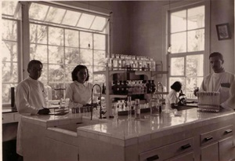
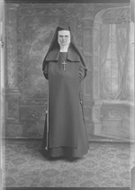
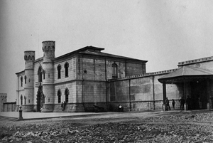
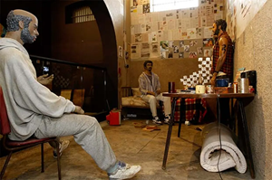
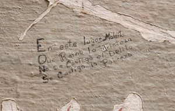
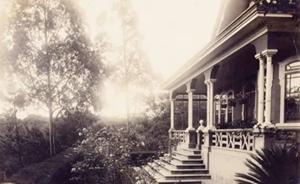
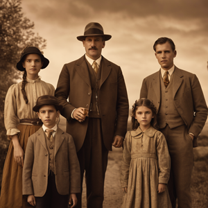

Información
En esta sección encontrará información acerca de los diferentes destinos de los que disponemos un tour
Sanatorio Durán
El hospital abandonado y embrujado más famoso del país
Penitenciaría Central
El actual museo de los niños recuerda su antigua historia al caer la noche
Prisión San Lucas
La isla de los hombres solos... ¿está realmente tan sola como se cree?
Casa Knöhr Hoffman
Una casa con un oscuro y trágico pasado que cobró la vida de siete personas
¿Qué tan lejos se encuentran los rumores, las leyendas y los mitos urbanos de reflejar la realidad?
¿Qué tan fina es la frontera que separa los relatos fantásticos de la verdadera historia?
Sanatorio Durán
Creado en 1915 bajo la iniciativa del Dr. Carlos Durán Cartín, se erigió en Cartago uno de los hospitales más emblemáticos de Costa Rica. Su misión, era tratar a los enfermos de tuberculosis. Enfermedad que azotó al país durante dicha época
El hospital entró en funcionamiento 1918 abrió sus puertas y se convirtió en un modelo para toda Centroamérica en el tratamiento de esta grave enfermedad que cobró la vida de una cantidad imporante de costarricenses, hasta su posterior cierre en 1973.
En el 2014, tras una larga historia de abandono y malos usos, el antiguo Sanatorio Durán fue declarado Patrimonio Histórico-Arquitectónico de Costa Rica por su importancia para el desarrollo de la medicina en Costa Rica, y por ser un testigo de las transformaciones arquitectónicas y constructivas experimentadas durante la primera mitad del siglo XX en el país.
Misterios & Leyendas
Los espíritus atrapados...
Las leyendas nos relatan que los lúgubres y desolados pasillos del hospital aún reviven cada noche los gritos de los enfermos convalecientes, aquellos que en vida alguna vez ocuparon una cama en las alas de cuidados intensivos. Un destello del pasado en los últimos minutos de vida de aquellos que agonizaron y sufrieron a causa de la mortal tuberculosis.
También, se cuenta que quienes visitan sus instalaciones, escuchan los pasos de entes que siguen caminando por los solitarios pasillos, los golpes en la paredes no cesan y más de uno observa sombras que nadie produce moverse escabrosamente de una habitación a otra para luego desaparecer. Además, muchas de las fotografías que son tomadas por los visitantes muestran rostros espectrales y tenebrosos asomando por las ventanas sin poder descansar en paz.
La Monja de Azul
Muy similar a las historias que hemos escuchado de otros hospitales, la leyenda nos cuenta que cuando el hospital aún operaba, había una monja en particular que prestaba servicios a los enfermos en sus últimos momentos. Se decía que esta monja vestía de azul y era avistada en las noches acompañando y dando alivio a los pacientes que estaban a punto de perder la batalla contra la tuberculosis y una vez que estos fallecían, la monja desaparecía para no ser más vista.
Hasta el tiempo presente, se cuenta que la monja aún deambula por los tétricos pasillos del hospital. Muchos visitantes, algunos de los cuáles han podido visitar el hospital durante las noches, han jurado por unos instantes verla caminar con un vaso de agua entre sus blanquecinas manos y pasando de habitación en habitación. Quizás, llevando alivio y consuelo a aquellas almas que aún siguen atrapadas entre las paredes del Hospital Carlos Durán.
Penitenciaría Central
Uno de los edificios más emblemáticos de San Jose. Su ubicación y su historia son incomparables con respecto a otras antiguas del país. La Penintenciaría Central o la "Peni" para algunos, fue un proyecto cuya construcción comenzó en 1885 y terminó aproximadamente en 1910. El objetivo era uno; el sistema penitenciario del país se encontraba entonces en estado deplorable y se requería de una nueva instalación carcelaría moderna capaz de albergar a aquellos que debían encarar a la justicia. El gobierno de Costa Rica en ese entonces se basó en diferentes centros penitenciarios de Europa para construir esta edificación.
La cárcel en sí se convirtió en castigo suficiente para quiénes terminaban encerrados tras sus paredes. Si bien, no solo los reclusos debían luchar contra condiciones inhumanas como la suciedad, el ocio, la carencia de agua, falta de alimentación y la proliferación de enfermedadades sino que también existía un problema aún mayor: sobrevivir. Pronto la Penintenciaría fue testigo del nacimiento de pandillas como "los Hijos del Diablo" quiénes eran temidos y conocidos por cometer crímenes atroces dentro la prisión como el asesinato de otros reclusos y jugar balón con los órganos de sus víctimas.
“Vulgarmente le llamaban "El Pulguero", bien se comprende por qué. Más que de pulgas, era ella un criadero de bichos peores que la peste. Tanto que las personas aseadas que tenían la desgracia de ser detenidas en ella, debían a la salida desinfectar sus ropas cuando eran liberados"
Los maltratos, las injusticias y la proliferación de problemas de bien social a causa de la vida de los reclusos en la Penitenciaría Central continuarían por varios años hasta su cierre definitivo el 20 de diciembre de 1979, durante la administración de Rodrigo Carazo Odio. Durante este periódo, las instalaciones sufrirían de gran abandono y desreparo sin ningún tipo de proyecto que diera frutos para reutilizar el espacio antiguamente ocupado por el centro final.
No obstante, después de un largo periódo en desuso del inmueble, en el año de 1994 durante la administración de Calderón Fournier, la Penintenciaría dejaría atrás sus oscuros días para convertirse en un museo único en su clase en toda Centroamérica: El museo de los niños. Actualmente, durante el día se realiza funciones para los niños, generando múltiples actividades de recreación y conocimiento en diversas áreas; mientras que en las noches, el museo presenta tours especiales a áreas acondicionadas para rememorar y mantener viva su vida pasada como penitenciaría, preservando por medio del uso de marionetas y utilería, la vida de aquellos reclusos que vivieron en otros tiempos.
Misterios & Leyendas
Un pasado sangriento...
En cuanto a eventos paranormales se trata, la atmósfera onírica y misteriosa "la Peni" es innegable, y aumenta considerablemente durante las noches. Tanto visitantes nocturnos como funcionarios del mismo, confirman haber experimentado situaciones que no tienen una clara explicación y que sobrepasa a cualquier típica visita a un lugar histórico. Muchos afirman haber escuchado voces y sonidos que no vienen de ningún lugar en específico a cualquier hora durante la noche. Se dice que se escucha el llanto y murmullos proviniendo de las antiguas celdas, actualmente vacías o ocupadas por maniquíes.
Los oficiales y guardias sin duda son los que mayor cantidad de anécdotas tienen para contar. Algunos hablan de ver sombras moviéndose por los pasillos, les llega a veces el olor a sangre de las celdas y algunos juran ver a los maniquíes cambiar de posición, sútilmente, cada vez que hacen rondas cerca de las celdas. Tanto es el furor que se experimenta en las noches solitarias en el actual museo que a los oficiales de seguridad se les aconseja nunca hacer rondas solos durante la noche, ya que algunos han llegado incluso a sufrir crisis nerviosas y otros problemas de salud debido al oscuro ambiente que se respira en el museo.
Prisión San Lucas
La Isla San Lucas alberga uno de los presidios más tenebrosos de Costa Rica. Ubicado en el Goldo de Nicoya, la prisión operó por casi 100 años, entrando en funcionamiento en 1873 y hasta su cierre definitivo en 1991. La prisión se creó con el objetivo inicial de albergar a "políticos indeseables" pero luego el concepto fue modificado para albergar a los presos más violentos y peligrosos del país en una zona geográfica distante, donde no pudieran escapar con facilidad.
Mientras estuvo en operación, albergó a cientos de reclusos, muchos de los cuáles fallecieron durante su custodia en la Isla debido a las conocidas torturas y tratamientos infrahumanos que los presos sufrían a manos de los custodios. otros tantos, murieron intentando escapar para regresar al país. Una de las historias más célebres es la del ahora novelista Jose León Sanchez quien escribió la famosa novela "La isla de los hombres solos" narrando todos los abusos e injusticias que vivió y observó en sus años de encarcelamiento.
Para el año 1995, fue decretado como Patrimonio Arquitectónico de la Provincia de Puntarenas, y tras unos años de reacondicionamiento, abrió nuevamente sus puertas como centro de atracción turístico con una de las mayores riquezas en memorias históricas y riqueza arqueológica y natural.
Misterios & Leyendas
La historia de una venganza
Una de las tantas historias de horror que se cuentan de la isla narra la venganza de un custodio, quien fue apuñalado por uno de los reclusos de la Isla. El reo tras herirlo, intentó escapar del castigo encerrándose en una celda con otros presos para evitar ser identificado y tras esto, cerró la celda desde el interior.
El custodio lleno de furia sin poder encontrarlo o poder siquiera entrar en la celda en su buscar fue a un recinto que estaba debajo y le prendió fuego a la celda con todo y los reclusos en el interior. El humo y el fuego convirtieron la celda en un horno de cemento que mató a decenas de hombres que estaban ahí. Los gritos eran básicamente horrorosos, según cuentan los rumores de algunos que estuvieron en la isla durante el incidente. Algunos visitantes a la isla, aseguran a veces oler humo o sentir que la temperatura cerca de la supuesta zona donde el hecho se dió aumenta considerablemente sin razón aparente.
La Enfermera...
Una de las muertes más horribles que se escucha ocurrió en la isla, fuera la de una supuesta enfermera que había sido enviada a la Isla a tratar las enfermedades y heridas que los custodios recibían de algunos reclusos. La leyenda cuenta que los presidiarios del recinto, planificaron un motín en la isla donde muchos perdieron la vida.
Entre ellas estuvo la enfermera que supuestamente fue abusada por decenas de presidiarios y luego de su muerte, sacaron su corazón e hígado y con ellos pintaron los dibujos más macabros de la prisión en una de las paredes de las celdas de máxima seguridad. Hoy, todavía se puede ver la “pintura” en dicha pared
Hasta el tiempo presente, se cuenta que la monja aún deambula por los tétricos pasillos del hospital. Muchos visitantes, algunos de los cuáles han podido visitar el hospital durante las noches, han jurado por unos instantes verla caminar con un vaso de agua entre sus blanquecinas manos y pasando de habitación en habitación. Quizás, llevando alivio y consuelo a aquellas almas que aún siguen atrapadas entre las paredes del Hospital Carlos Durán.
Casa Knöhr Hoffman
En la década de 1850, la familia Knöhr compuesta por Adolf y Johan llegan a Costa Rica. Los hermanos procedentes de Hamburgo se dedicado en el país a la producción cafetalera y fueron considerados de los hombres más influyentes económicamente en el país en el momento. Se dice que el hijo de Johan fue quién construyó la Casa Knöhr Hoffman.
Otto Knöhr, hijo de Johan se dice heredó de su padre una gran fortuna y todos los negocios y comercios desarrollados por su padre desde su llegada al país. Tras construir la casa, vivió en ella junto a su esposa y cinco hijos hasta la noche en que una fatídica tragedia golpeó a la familia, cobrando la vida de siete personas. Esa noche, la casa Knöhr pasaría a la historia como una de las malditas en el país apodada la "Casa de los Siete Ahorcados".
En tiempo presente, la vivienda se encuentra en total desreparo y abandonada al paso de los elementos, donde los ojos curiosos de los que visitan Barrio Otoya se detienen unos momentos a admirar. Y donde algunos pocos, con los debidos permisos, logran ingresar a la propiedad y atestiguan que, a pesar del paso de los años, se encuentra más embrujada que nunca y que la familia Knöhr Hoffman aún reside en muerte en ella sin encontrar ningún tipo de paz.
Misterios & Leyendas
Un padre que se vuelve un asesino
Son muchos los rumores sobre lo que pasó esa fatídica noche en la Casa Knöhr, pero entre los más populares se menciona que el señor Otto Knöhr padecía de una debilidad por el alcohol y bebía muchas veces hasta volverse violento. Se dice que una de esas tantas ocasiones, el alcohol logró nublar el juicio de Otto, lo que le llevó a golpear a su esposa hasta la inconsciencia y mientras esta se encontraba desmayada, el hombre ahorcó a sus cinco hijos.
Se dice que la esposa, al recobrar la consciencia, gritó hasta la locura al ver a sus hijos ahorcados e intentó escapar, creyendo que alguien se había metido a la casa - un posible enemigo de Otto - para vengarse de él. Sin embargo, para su horror, descubrió que su esposo fue quién mató a los niños. Este avergozado por lo que había hecho, decididó ahorcar a su esposa y luego ahorcarse él para evitar que la verdad fuera conocida sobre los horrores que el alcohol le habían hecho hacer.
Una familia cruel
Otra de los mitos más populares sobre lo que ocurrió esa noche, habla sobre la calidad del caracter de la familia Knöhr Hoffman. La versión de esta leyenda nos relata que tanto Otto como su esposa, era gente despiadada que maltrataba y humillaba a los sirvientes y peones que trabajan en la propiedad y en los negocios de Otto Knöhr. Esto hasta el punto que muchos duraban solo unos cuántos días antes de finalmente irse.
En venganza por el maltrato, se dice que los criados y sirvientes que seguían sirviendo a la familia Knöhr planificaron una veganza atroz contra la familia. Y así, una noche planificaron atacar a la familia, obligando a Otto y a su esposa a ver como estos ahorcaban y mataban a sus hijos frente a sus propios ojos. Y, hasta que no hubieran logrado inflingir hasta la última gota de dolor y sufrimiento, decidieron ahorcar finalmente a Otto y a su esposa en respuesta a la forma en que ellos les habían tratado.
